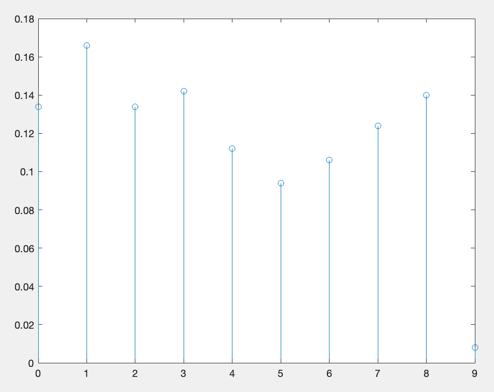
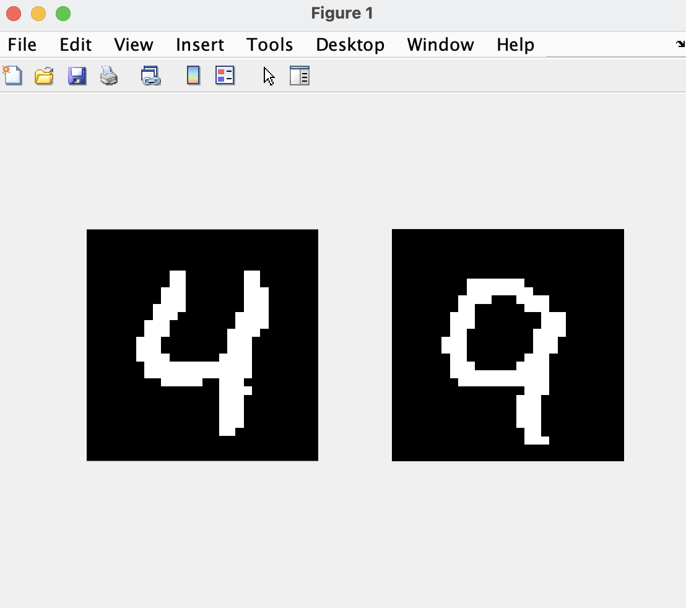
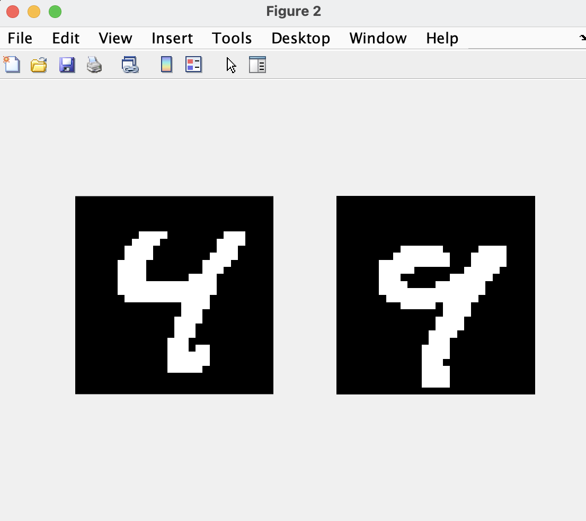
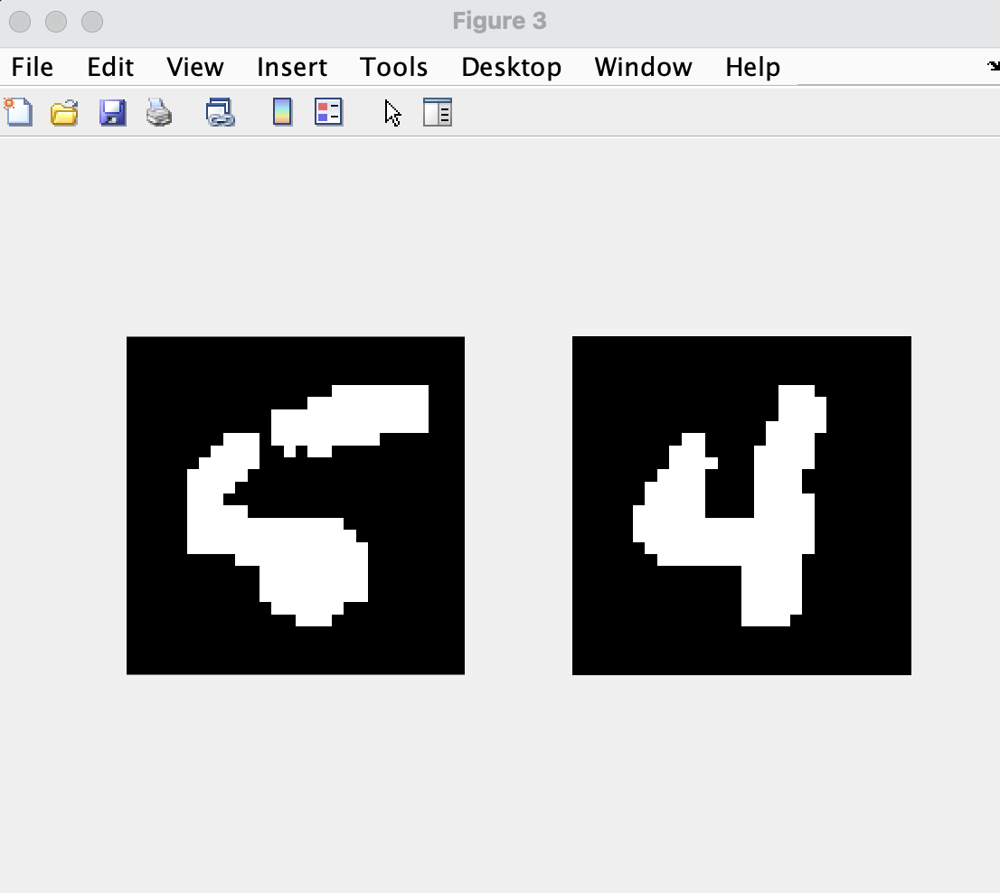
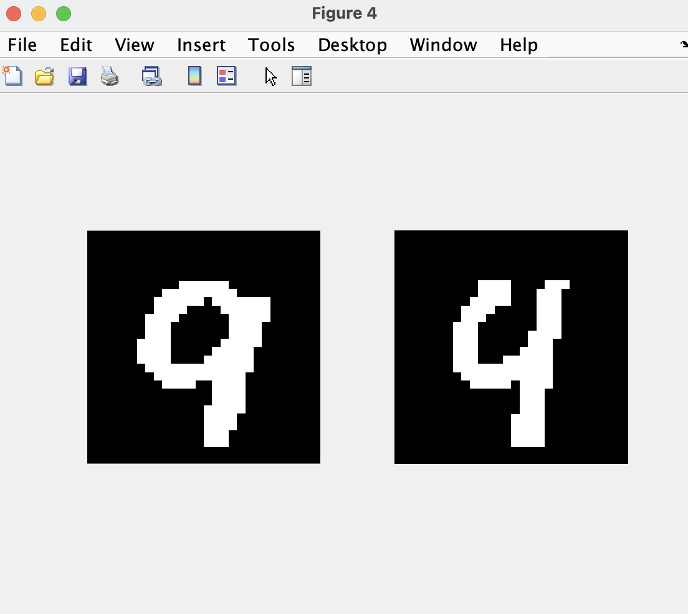
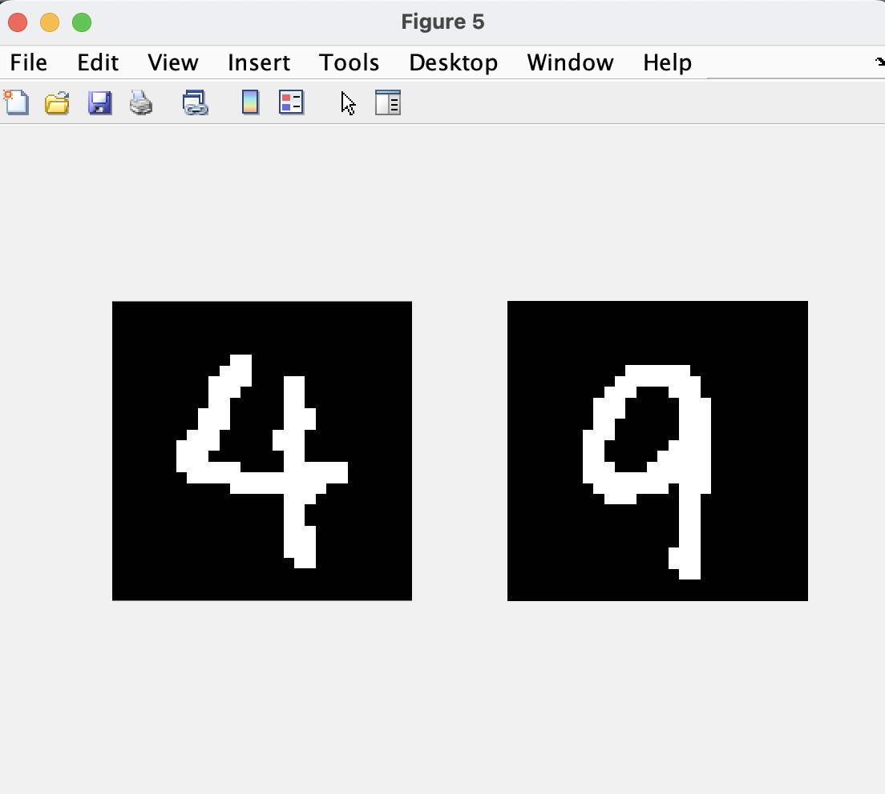

Using a database with a set of 5000 training images, and 500 test images of hand-written numerals (each image being 28x28 pixels with intensity values ranging from 0-255), I trained a nearest neighbor classifier. I utilized the Euclidean distance metric and tested it on the test database.
After this, I computed and plotted the error rates for reach class, which can be seen in the image below.

After calculating the individual error rates, I calculated the overall error rate, which was 0.122. This shows that the classifier was able to correctly classify 87.8% of the test images, and that there is certainly room for improvement.
P(Error): 0.122000
By looking at the test image and its corresponding nearest image, I can infer that the nearest neighbor classifier failed to perform because the number four in the former has plenty of similarities with the number nine in the latter. This is a very common mistake that not only NN classifiers, but also humans make.

The classifier failed to perform here again because the number four in the former has plenty of similarities with the number nine in the latter. However, here it is apparent that the number nine in the latter image is a bit sloppy and even has a gap between its top two points.

I reckon that in the former image here, the number six is so sloppy that the classifier had no clue what number it is. It just looked for an image with a similar location of pixels as the former, and found a '4' with such qualities.

As seen before, our classifier has a hard time distinguishing between the number four and the number nine. Here, the number four in the latter image has a very small gap between its top two points, which caused our classifier to believe that it was a number nine.

Unlike in our other cases, the numbers four and nine are written very clearly here. I would say that the classifier failed to perform here because the number nine in the latter image has a couple pixels on the right, similar to the number four in the former, leading it to believe that they were the same number.

Note: the MATLAB code is private for Academic Integrity purposes.